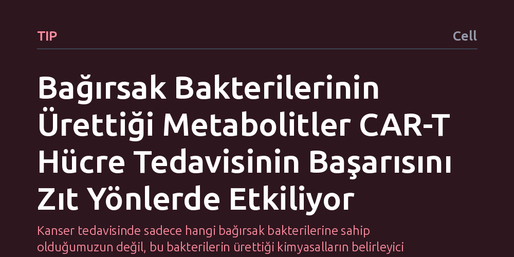

TIP · Cell · 2026-10-13
Araştırmacılar, bağırsak mikrobiyotasının CAR-T kanser tedavisi başarısını nasıl etkilediğini inceledi. Bakteri türlerinin tek başına belirleyici olmadığını, bakterilerin ürettiği bağışıklık düzenleyici metabolitlerin tedavinin tümör kontrolünü zıt yönlerde etkilediğini buldular.
Kanser tedavisinde sadece hangi bağırsak bakterilerine sahip olduğumuzun değil, bu bakterilerin ürettiği kimyasalların belirleyici olduğunu göstererek tedavinin başarısını artırmak için yeni bir hedef sunuyor.

CAR-T hücre tedavisi, hastanın kendi bağışıklık hücrelerini kanserle savaşacak şekilde yeniden eğiten modern tıbbın en umut verici yaklaşımlarından biridir. Ancak bu tedavi her hastada aynı sonucu vermez; bazı hastalarda tümörler gerilerken bazılarında tedavi etkisiz kalır. Araştırmacılar uzun süredir bu başarı farkının arkasında vücudumuzdaki en zengin mikroorganizma topluluğu olan bağırsak mikrobiyotasının rolünü anlamaya çalışıyordu.
Şimdiye kadar yaygın yaklaşım, bağırsakta hangi bakteri türlerinin bulunup bulunmadığına odaklanmaktı. Bu çalışma ise şu temel soruyu gündeme getiriyor: Tedavi sonucunu belirleyen asıl etken bakterilerin kimliği mi, yoksa bu bakterilerin üreterek kana saldığı kimyasal maddeler mi? Bu sorunun cevabı, kanser tedavisinin başarısını artırmak için kritik bir kapı aralayabilir.
Araştırmacılar, bağırsak mikrobiyotası ile bağışıklık sistemi arasındaki bağı aydınlatmak için geleneksel sınıflandırma yöntemlerinin ötesine geçti. Yalnızca hangi bakteri türlerinin bağırsakta yaşadığını saymak yerine, bu mikroorganizmaların ürettiği bağışıklık düzenleyici metabolitleri mercek altına aldılar.
Çalışmada, farklı bakteriyel metabolitlerin bağışıklık hücreleri üzerindeki doğrudan etkileri laboratuvar modellerinde test edildi. Bakterilerin ürettiği küçük kimyasal moleküllerin, programlanmış T hücrelerinin tümör hücrelerini öldürme gücünü ve hayatta kalma kapasitesini nasıl etkilediği ayrıntılı şekilde ölçüldü.
Elde edilen bulgular, yalnızca bağırsaktaki bakteri türlerinin listesine bakmanın CAR-T tedavisinin sonucunu tahmin etmede yetersiz kaldığını ortaya koydu. Benzer bakteri profiline sahip bireylerde bile metabolit düzeylerindeki farklılıklar nedeniyle tedavinin seyri değişebiliyordu.
Daha da önemlisi, bakterilerin ürettiği bağışıklık düzenleyici metabolitlerin tek tip bir etki yaratmadığı belirlendi. Kimi metabolitler CAR-T hücrelerinin tümörü kontrol etme gücünü artırırken, kimi metabolitler tam tersine bu hücrelerin işlevini frenliyordu. Yani bağırsaktaki kimyasal ortam, kanser tedavisine karşı hem destekleyici hem de köstekleyici zıt kuvvetleri bir arada barındırıyor.
Bu bulgular, kanser immünoterapisinde kişiselleştirilmiş yaklaşımların yönünü değiştirebilecek bir içgörü sunuyor. Hastaların yalnızca mikrobiyota kompozisyonuna odaklanmak yerine, bağırsaklarındaki metabolit profilini izlemek tedavinin başarısını öngörmede çok daha güvenilir bir araç olabilir.
Gelecekte, tedavi öncesinde olumlu metabolitleri artıran ve engelleyici metabolitleri baskılayan özel beslenme müdahaleleri ya da takviyeler geliştirilebilir. Böylece mikroorganizmaların kimyasal üretimi kontrol altına alınarak CAR-T hücre tedavisinin başarı şansı yukarı taşınabilir.